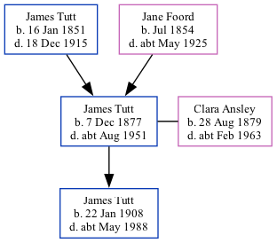

James Richard Edmund Tutt 1877 - c1951
[ Home ] | [ Calendar ] | [ Surnames Index ] | [ Family History ]A fitter and waterworks main layer heavy and the son of James Tutt (a general laborer) and Jane Foord (a general shop), James Tutt, the first cousin twice-removed on the father's side of <a href="I1.html">Nigel Horne</a>, was born in Ramsgate, Kent, England on Dec 7, 1877<span class="citation">1,2,3,4</span>, was baptized there at St Lukes on Aug 13, 1878 and also married Clara Ansley (with whom he had 1 child, James Alfred William) there at Holy Trinity Church, on Apr 24, 1905<span class="citation">5</span>.</p><p>James spent all of his life in Kent, England. Throughout his life, he lived in several places around the county: at 18 Clarence Terrace in Ramsgate on Apr 3, 1881<span class="citation">6</span>; on Hillbrow Road, St Lawrence, Thanet, Kent, England on Mar 31, 1901<span class="citation">1</span>; at 5 Pleasant Place, Margate on Apr 2, 1911<span class="citation">2</span>; and at 6 Pleasant Place, Margate on Sep 29, 1939<span class="citation">3</span>. <p>He died <i>c.</i> Aug 1951 in Thanet<span class="citation">4</span>.
Parents
- James was born on Jan 16, 1851
- Jane was born in Jul 1854
Children
- James Alfred William was born on Jan 22, 1908
Citations
- 1901 England, Wales & Scotland Census - Findmypast (was age 23 and the son of the head of the household)
- 1911 Census for England & Wales - Findmypast (was age 32 and the head of the household)
- 1939 Register - Findmypast (was recorded at this address)
- England & Wales deaths 1837-2007 - Findmypast
- Kent, Canterbury Archdeaconry marriages 1538-1928 - Findmypast
- 1881 England, Wales & Scotland Census - Findmypast (was age 3 and the son of the head of the household)
Media
England & Wales births 1837-2006 - BMD/B/1878/1/AZ/000575/044
England & Wales deaths 1837-2007 - BMD/D/1951/3/AZ/000847/038
1911 England, Wales & Scotland Census Transcription - GBC-1911-RG14-04494-0429-1
Kent, Canterbury Archdeaconry marriages 1538-1928 - GBPRS/CANT/M/97034876/1
England Marriages 1538-1973 - R_848238413
England & Wales marriages 1837-2008 - BMD/M/1905/2/AZ/000385/146
1939 Register Transcription - TNA-R39-1755-1755G-002-13
England, Births & Baptisms 1538-1975 Transcription - R_884621343
1939 Register - TNA/R39/1755/1755G/002/11
Family Tree
Generated by Ged2Site. Last updated on Jul 20, 2025